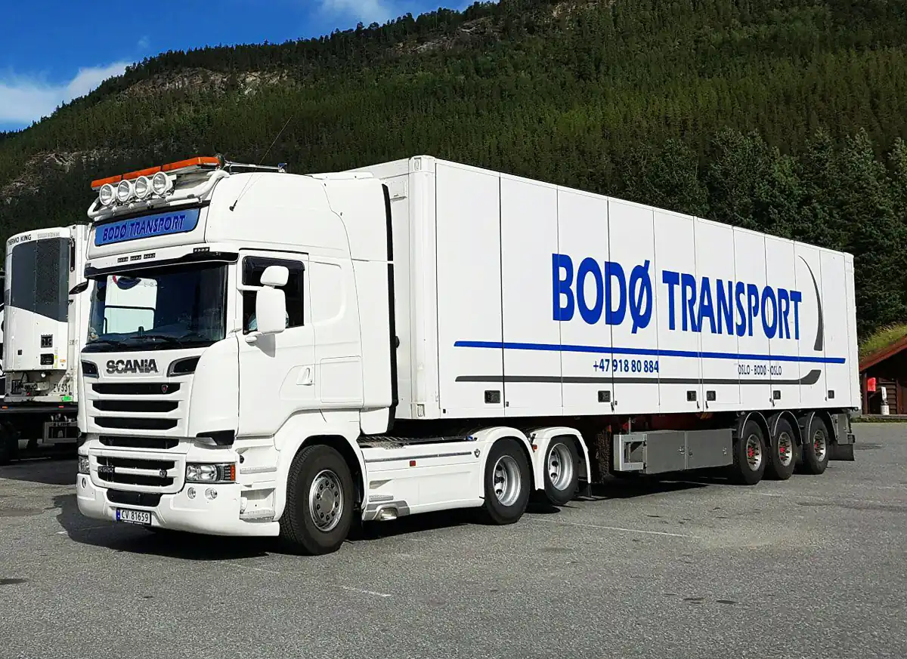

Transport · Oslo – Bodø
Profesjonelle og fleksible transportløsninger.
Av erfaring har vi lært at kundene våre er opptatt av profesjonelle og fleksible transport- og lagerløsninger. Det er nettopp det vi tilbyr.
Siden 2005Oslo–BodøLager
01 — Tjenester
Det vi frakter og lagrer
Stykkgods, langtransport og lager – med oppfølging underveis.

02 — Om oss
Mennesker som sier ja
Bodø Transport AS ble stiftet i 2005 av Jan Roger Andreassen og Morten Selfors Isaksen. Her finner du folk som er mest opptatt av å si ja – og så følge opp ja-et med profesjonell service og kundevennlig behandling.
- Profesjonelle – fagfolk på transport og lager.
- Fleksible – løsninger tilpasset behovet.
- Løsningsorienterte – vi finner en vei.
03 — Slik jobber vi
Fire steg
Fra forespørsel til levering.
- Forespørsel
Hva skal fraktes, hvorfra og hvorhen.
- Plan
Rute, tid og pris avklares.
- Transport
Vi kjører, og holder deg orientert.
- Levering
Godset leveres, og vi kvitterer ut.
«Profesjonelle og fleksible transportløsninger og lagerløsninger – det er nettopp det vi tilbyr.»
Trenger du transport eller lager?
Ta kontakt, så finner vi en løsning som passer varene og ruta.